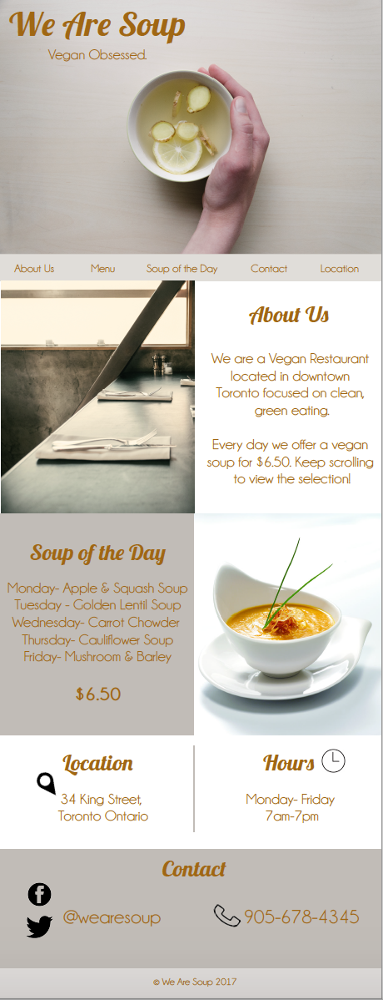
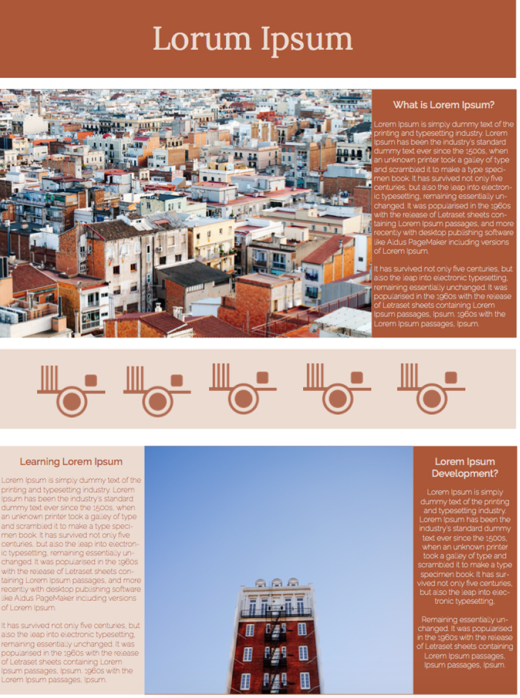
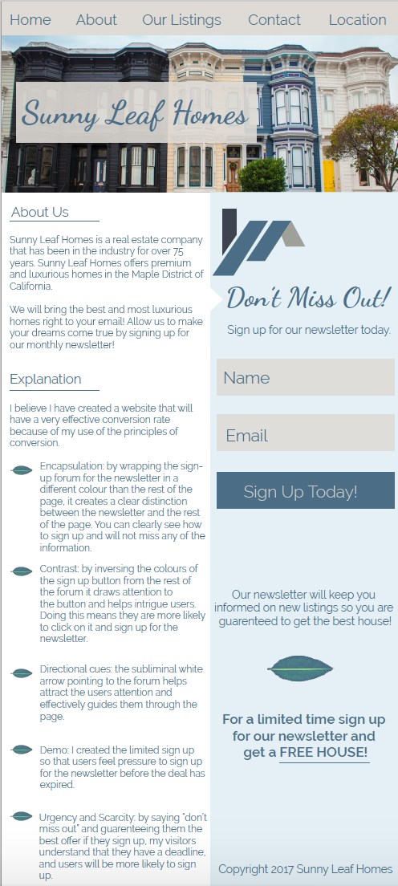
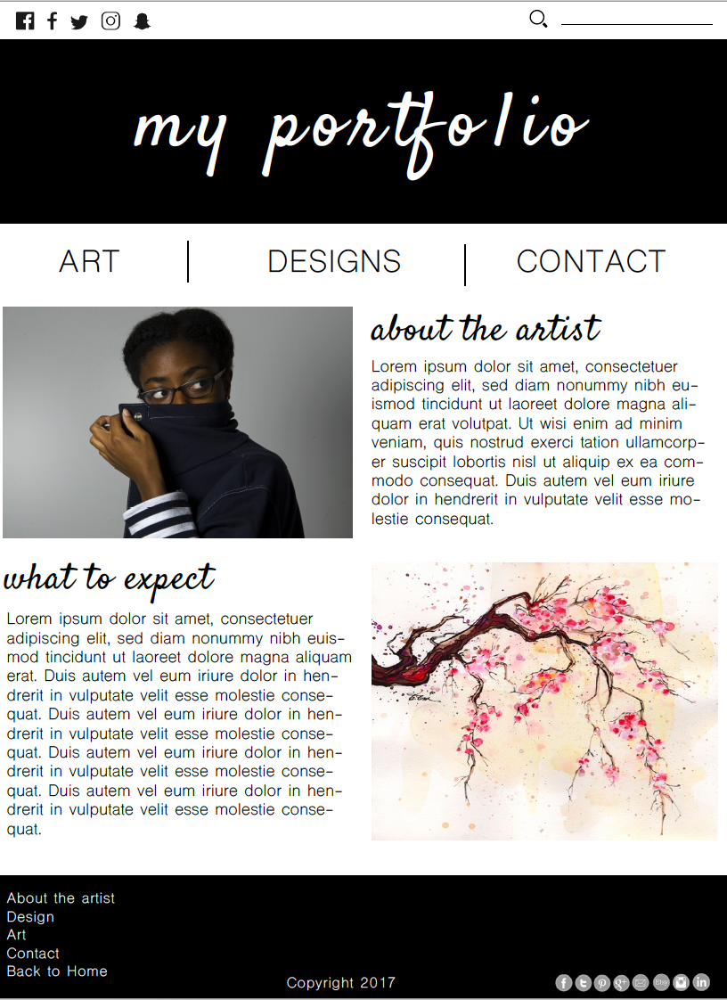
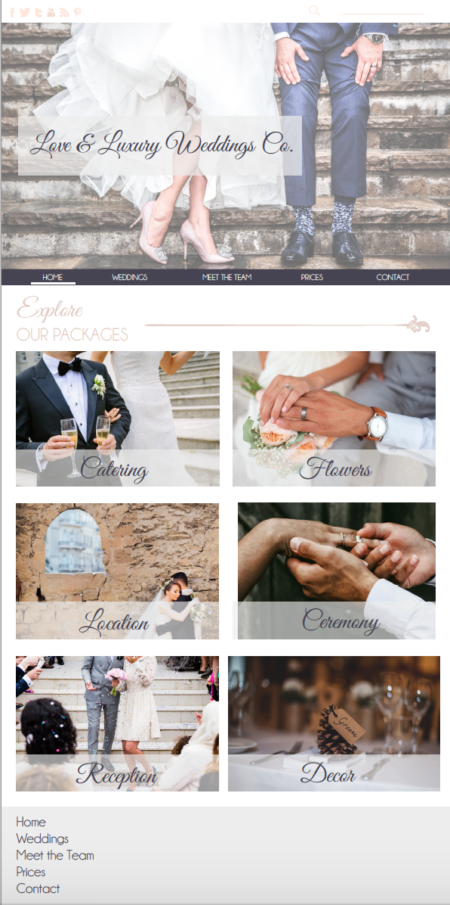

The purpose of this assignment was to create a website design for a vegan soup company while keeping the ideals of minimalism in mind.
This website mockup was made for an assigment to show that I understood the concept of the golden ratio, and how you can effectively apply this to web deisgn.
This website design was meant to show that I understood user flow and how it can be used to effectively draw people to specific points on a website. The purpose of this website was to get people to book a flight.
Sunny Leaf Homes was a fictional company that I was asked to create a website mockup for to effectively show what conversion rate is and what techniques can be used to improve conversion rate.
For this assignment we were given as example of a portfolio which was not effectively designed and we were asked to redesign it using the same content, links and photos.
This website mockup was for an assignment where we were to show effective use of typography in a web layout.
This was a website mockup created for a fictional company to show how we could take certain elements and use them to create a website based on them.